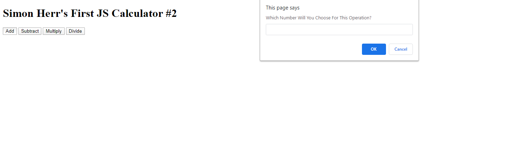

During my time in CART we learned to create websites using HTML, CSS, and Javascript. So far I have made a few websites. The websites or projects that I have created were the Calculator, The Interactive Story, Computing Innovation, and Zen Garden.
During the first semester of Web Development we were learning JavaScript. While we were learning we had to create a calculator that functioned correctly. Everything had to work correctly, like addition, subtraction, multiplication, and division. Since we were still learning, everything was very hard. This is because I didn’t know a single thing about JavaScript. So I got help from the teacher and other students. Even with other people's help I still kinda struggled. But I started out by creating the buttons of the calculator. These buttons had add, subtract, multiply, and divide. These buttons were connected to code that I wrote in my javascript. Like button add was connected to the function sum which means add. Then when we clicked on the buttons we made prompts and alerts pop up so that the user can put in a number. After that the computer asks for a second number and depending on what you chose it would add, subtract, multiply, and divide. In the end everything functioned correctly, except addition. When my button would add the two numbers right next to each other. For example 2+2=4 but for my calculator 2+2=22. That was the problem and I still need to fix it. But when the calculator was almost done it was amazing that I created something like this.
I created the Interactive story in the first semester of my junior year. This assignment was mixed with English and Web Development. So what I did was create my story from scratch. We had to use the twelve steps of a hero’s journey. So I created my own story. It was about a ninja that was abandoned when it was still a baby. This was because his family had no choice when being chased by evil samurai. But when the samurai leader found the baby he raised him as his own and named him Yashiro. Yashiro trained to be a samurai every single day and became a powerful person. But there was a day when the samurai leader was on his deathbed. No lies were being told there and told him where his real parents lived and should go look for them. When the leader passed away everyone mourned for days. But the day came where he searched for his parents. When he did find them he was held as a prisoner because in their eyes he Yashiro was a stranger. But then they finally notice who he was because of how he looked. His parents looked for Yashiro for years but never found him. So were corrupted demons because of their guilt of abandoning Yashiro. In the end his parents also passed aways because the demon inside of them was harming them. But they passed away happily to know that their son. Yashiro forgives them. Now that was my story for english. For Web Development we had to create three unique beginnings and endings. Which I kinda improvised on. To create these three beginnings and endings I created buttons that had been connected to others so that these can transition smoothly. I created a button using a function called makeButton(btnext, choice). The buttons had text in it and when you chose that button there were three different buttons that you can choose from.